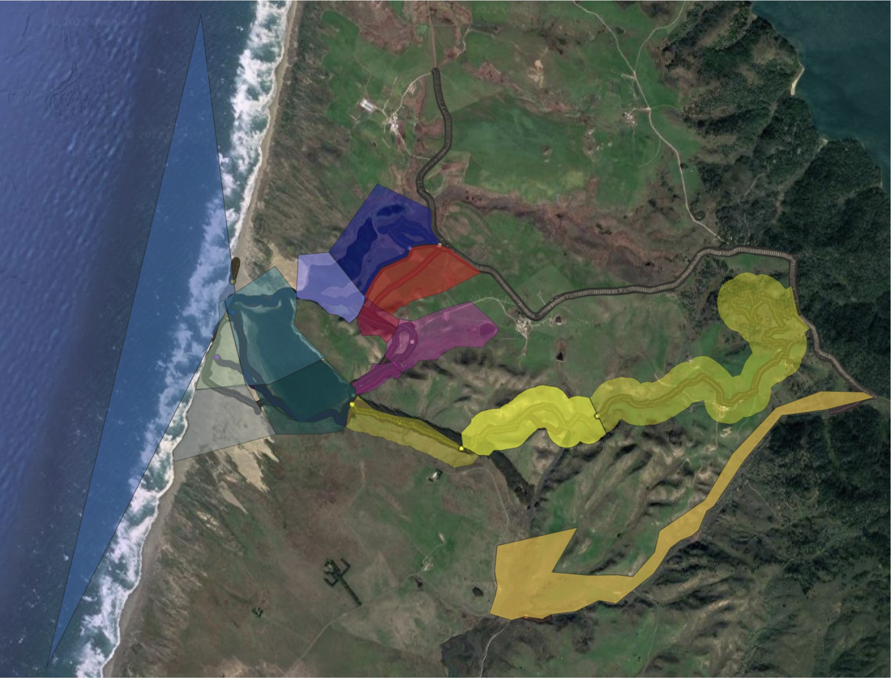

Abbotts Lagoon
Abbotts Lagoon: Teams for Unique ‘Birdsheds’
We have divided Abbotts Lagoon subarea #23 into different routes with the approximate extent that birds can be seen from anywhere on that route defining a ‘birdshed’ or color-coded polygon. We use the colors to refer to the routes, polygons and the team that covers them.
Color-coded routes and polygons:
The Abbotts Lagoon CBC area number 23 map is divided into multiple non-overlapping color-coded polygons with a track that each team follows to count birds (Blue, Red, Yellow, Orange). The main lagoon itself is divided into N and S regions as well as the standard seawatch from the N. berm and various dune and beach wanderings.

Abbotts Lagoon CBC area number 23 count territories including Blue, Red, Yellow, and Orange Summary of tracks and polygons from 2019 and 2021 (QGIS map by M. Schulist & D. Kapan).
Directions for Abbotts Lagoon subarea #23:
Teams first complete the following assigned routes through unique polygons and then take replicate eBird data when moving across other teams’ assigned territories/polygons; this allows us to compare different lists for the same area and take the high counts for stationary birds.
The Abbotts Lagoon CBC area number 23 map is divided into multiple non-overlapping color-coded polygons with a track that each team follows to count birds (Blue, Red, Yellow, Orange, etc.).
Abbotts Lagoon is divided into two polygons (the N side - Blue Team, S. Side - Red team). We often meet on the W. Shore (middle area–log those birds in the N-side polygon area). We need to keep separate track of birds in these two areas so we can combine the two lists (and compare replicate lists) to sum the total number of birds on the lagoon.
For birds that are not moving, we can assign them to a specific polygon and add (SUM) separate polygons together.
For birds noted on lists from different parties that cover the same route (e.g. Red) that overlap with other Red team lists, we will utilize the high count (MAX) from the relevant overlapping lists.
For birds that are moving around (some large water birds/ducks/shorebirds), we will utilize the high count (MAX) from different lists potentially on the same or different subareas.
Make sure to put whether the birds are moving around or are stationary in the comments for the species.
Recall, birds from different lists are SUMmed!
Access trip reports for previous eBird CBC counts at Abbotts Lagoon
Point Reyes CBC Abbotts Lagoon Area #23 2023-12-16 Trip Report (16 Dec 2023)
Point Reyes CBC Abbotts Lagoon Area #23 2022-12-17 Trip Report (17 Dec 2022)
Point Reyes CBC Abbotts Lagoon Area #23 2021-12-18 Trip Report (18 Dec 2021)
Point Reyes CBC Abbotts Lagoon Area #23 2019-12-14 Trip Report (14 Dec 2019)
Point Reyes CBC Abbotts Lagoon Area #23 2018-12-15 Trip Report (15 Dec 2018)
Point Reyes CBC Abbotts Lagoon Area #23 2017-12-16 Trip Report (16 Dec 2017)
Point Reyes CBC Abbotts Lagoon Area #23 2016-12-17 Trip Report (17 Dec 2016)
Point Reyes CBC Abbotts Lagoon Area #23 2015-12-19 Trip Report (19 Dec 2015)
(note the trip-lists are raw input for eBirdCBC so they haven’t been subject to the “Max-Sum”™ algorithm)!
Under construction: live example with final tally
© 2015-2024 Durrell D. Kapan